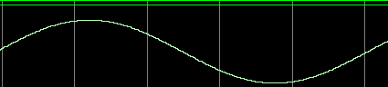

Matlab与ISE联合仿真FPGA程序
Matlab与ISE联合仿真
ISE自带的仿真器只能以数字化形式显示仿真结果，这对我们分析仿真结果的正确性造成极大不便，虽然ISE可以使用Modelsim进行仿真，尽管Modelsim可以以模拟形式显示仿真结果，但对我们信号处理的结果仿真，功能还是略显不足。这时我们便需要Matlab和ISE联合仿真来分析FPGA程序结果。Matlab包含大量函数，图形显示能力也极强，可以用Matlab生成FPGA程序所需数据进行仿真，最后可以将FPGA运行结果导出到Matlab中进行分析。
Matlab产生数据用于ISE仿真
下面程序片段是利用Matlab产生一个周期为256点8bit的正弦波数据：1
2
3
4
5
6N = 256;
n = 1:256;
x = fix(128 + (2^7 - 1) * sin(2*pi*n/N));
fid = fopen('sin.txt','wt');
fprintf(fid,'%x\n',x);
fclose(fid);
上面代码段产生一个sin.txt文件，里面包含256个以16进制存储的数据。
ISE中testbench读取文件
将上面产生的sin.txt文件拷贝到verilog仿真项目下，在testbench文件中添加如下代码读取数据：1
2
3
4
5
6
7
8
9
10
11
12
13
14
15
16
17
18
19reg [7:0] data_mem[0:255]; //定义一个8bit X 256的数组
initial
begin
$readmemh("sin.txt",data_mem); //将sin.txt中的数据读入存储器data_mem
end
//将数据读入数组之后，将数据从data_out输出：
always @(posedge clk)begin
if(rst)
begin
data_out <= 8'd0;
i <= 8'd0;
end
else
begin
data_out <= data_mem[i]; //将存储器中的数据输出
i <= i + 8'd1;
end
end
对程序进行仿真即可得到从文件中导入的数据的波形图：

Matlab对ISE仿真生成的数据进行分析
Matlab对Modelsim仿真生成数据的处理也是通过文件读写实现的。即通过Verilog语句，将仿真过程中的某个信号写入文件，然后在Matlab中在把这个文件的数据读出来，就可以在Matlab中进行分析了。
下面是Verilog语句实现将仿真数据写入文件的代码：1
2
3
4
5
6
7
8
9integer w_file;
initial w_file = $fopen("data_out.txt");
always @(i)
begin
$fdisplay(w_file,"%h",data_out);
if(i == 8'd255) //共写入256个数据
$stop;
end
下面是Matlab从data_out.txt中读取数据的代码：1
2
3
4
5
6
7fid = fopen('data_out.txt','r');
for i = 1 : 256;
num(i) = fscanf(fid, '%x', 1); %从fid所指的文件以16进制方式读出一个数据。
end
fclose(fid);
plot(num);
以上就是Matlab与ISE联合仿真的基本方法。